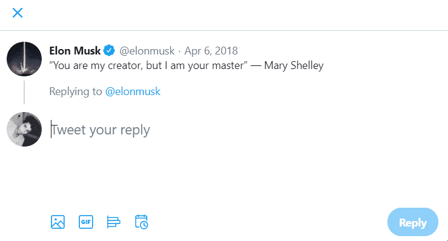

Snap Bot
Follow
Light
Dark
Like Tweet
Hide Tweet Image
Download
📸 Capture your favorite tweets and save as image!

1. Follow me,
Snap Bot (@snap_twt)
on Twitter, so you can easily mention me.
2. Mention me in a reply to a tweet with keyword "snap".
@snap_twt snap
That's it! I'll be there in a few seconds...